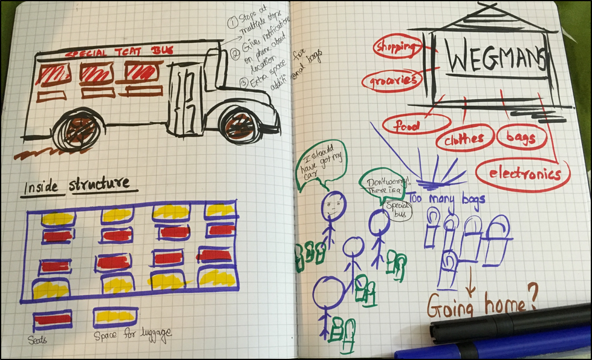
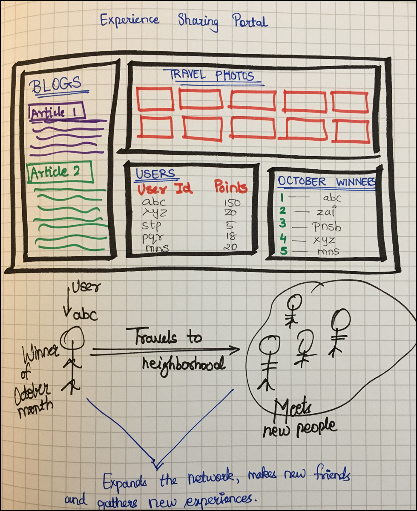
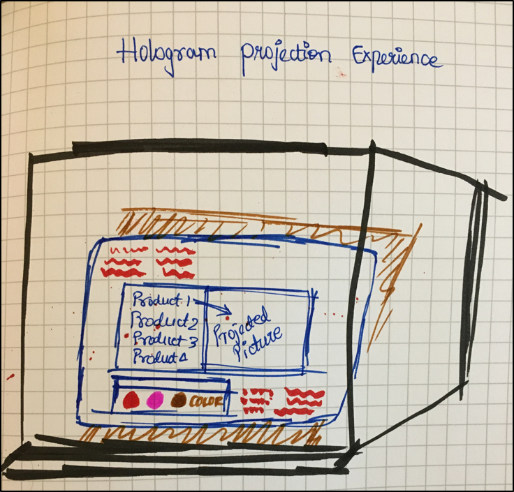

Design Concept
From the survey response, author mentions that people prefer to take cars when they have to carry things. This makes sense because everyone is looking for comfort and convenience these days. Most of the carrying stuff takes place when people go for weekly shopping of the groceries and regular needs. To avoid the necessity of cars, new buses can be designed, which tracks the locations of the people who are shopping in the malls and give them notifications half an hour in advance that it will be available at the nearest stop within next 30 minutes. So waiting issues can be taken care of. Also holding so much weight can be troublesome, so these buses would have special sections besides each seat to keep the luggage. All the user has to do is keep all the shopping bags on the carriage space designed for it. Also there can be complaint that the buses don’t stop at the exact location of the houses and people have to walk down for few meters. So even to solve this problem, these special buses can have flexibility to halt at more locations than the regular buses, giving perks to the people to start using these buses and avoid cars while going for shopping.
Reference Article:
Jon Froehlich, Tawanna Dillahunt, Predrag Klasnja, Jennifer Mankoff, Sunny Consolvo, Beverly Harrison, James A. Landay. UbiGreen: Investigating a Mobile Tool for Tracking and Supporting Green Transportation Habits. CHI, 2009. Pp 1-10.

Design Concept
A lot of people plan vacations and trips across countries and states for taking time off and exploring the new place. In the quest to travel over to a different culture, at times people never think about visiting the nearby places which are nearby to their current cities and thus there is a lack of connection. The design approach to this problem can be solved through a portal solution. A portal where people across the world can share their travel experience blogs and pictures. Their viewpoint, opinions, likes, dislikes of their journey. Based on the blog reads and picture likes, the author of that will get points accrued in his account. Every month, 5-10 people who have accrued more points get a trip ticket to a place in the neighborhood as a gift coupon. This incentive will urge the people to connect and explore the nearby places and cultures. Also when people share their experiences and reviews for this trip over the portal back, their friends and family will also want to visit that place. By giving the people a chance to connect with neighborhoods, they can build great experiences and learnings and in return share their cultural values too.
Drawback - There can be cases where people are unable to use their travel gift cards; in such cases the portal rules doesn’t allow it to be transferable. Thus this can be the drawback of the incentive, if the individual cannot make it to the trip due to some prior commitments.
Reference Article:
John Ewing, “Case Study: Virtual Streetcorners”, in Boyd, Andrew, and Dave Oswald Mitchell, eds., Beautiful Trouble: A Toolbox for Revolution, 2012, pp. 388-391.

Design Concept
The design portrays a cubical shaped glass which has a hologram projection of the different products available in the store/ mall for grabbing customers’ attention. It allows consumers to view the different products and their features. Different variations can be selected for the functionalities and appearance. It gives a 360-degree view along with different analytics data. The main design concept that is conveyed here is, how the designers put their innovative thinking to market the product and improve its face value. This projection experience can be specially used to check if the customer is excited to use the upcoming product. This can also give the store an insight into product trends.
Drawback - By having different variations in the projection, the customers might expect so many versions in the market. However, the product might not be manufactured in so many variations. The additional appearance features might only be for the creative effect.
Reference Article:
Dunne, Anthony, and Fiona Raby, 2001. Design Noir: The Secret Life of Electronic Objects. Birkhauser. Pp 58-73.